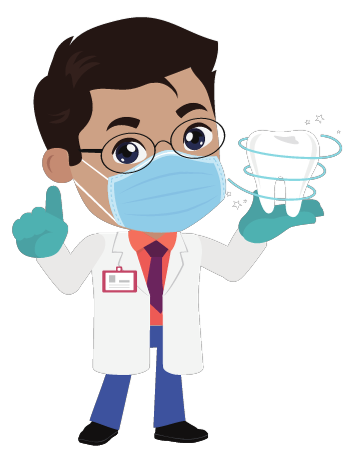
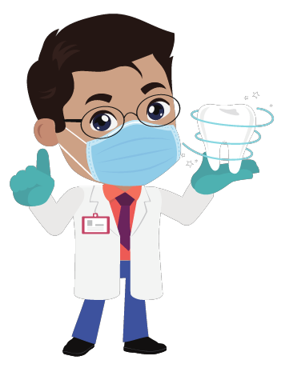

.png "Logotipo")
Manter os cuidados com a saúde bucal é essencial para ter um sorriso harmônico. Por isso, além de manter a higiene bucal em dia, você deve consultar um dentista de confiança com regularidade. Porém, você sabe qual a importância de escolher corretamente uma clínica odontológica?
| Horario de Atendimentos | |
|---|---|
| Dia | Hora |
| Segunda à Sexta | 7:30h -11h, 13h -18h |
| Sábado às | 7:30h -11:30h |